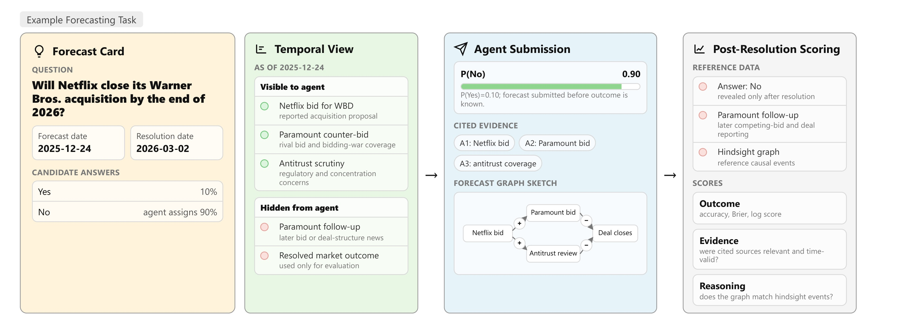
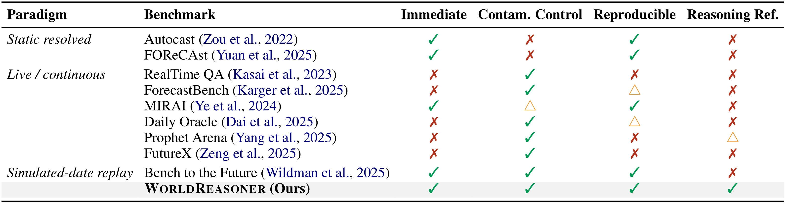
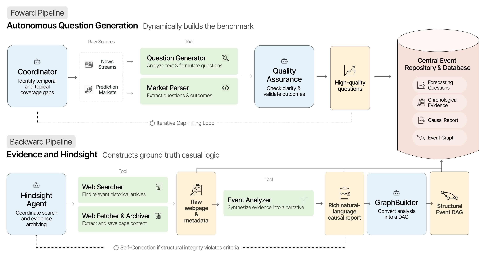
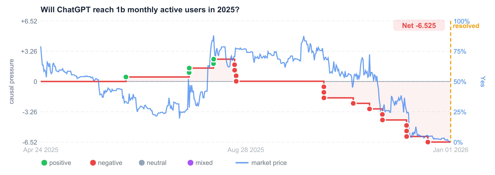
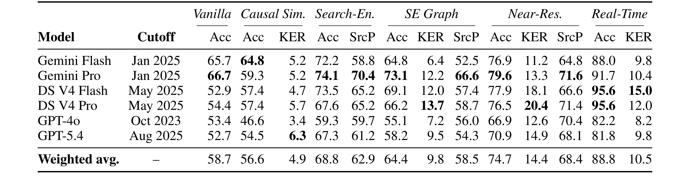
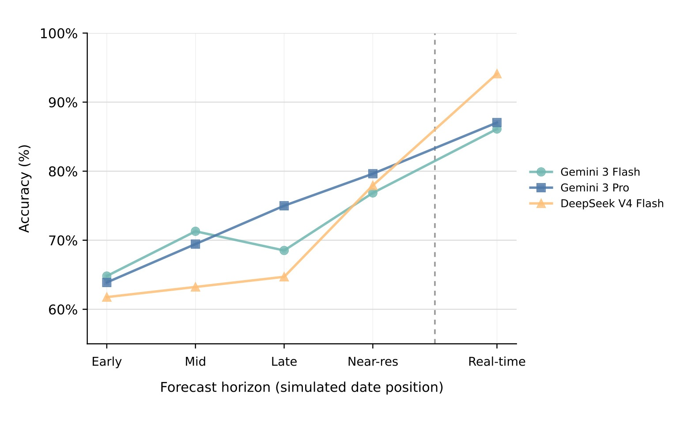
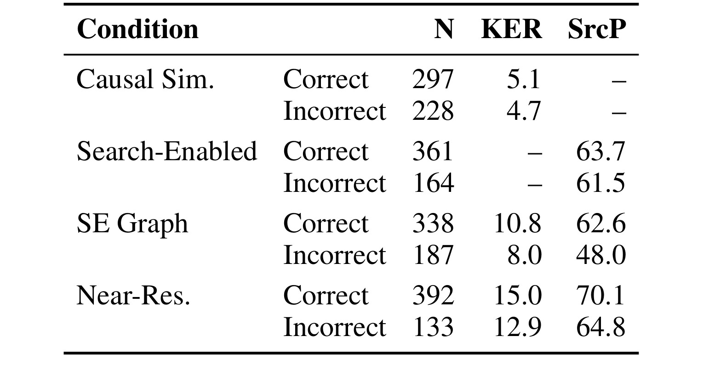

WorldReasoner：用时间边界、证据和因果图检验预测型 Agent 是否真的在推理
这篇论文研究的不是“哪个模型押中更多未来事件”这个单一问题，而是怎样评价一个语言模型 agent 在预测真实世界事件时是否遵守了时间边界、是否引用了当时可见且相关的证据、以及是否给出了能与事后关键事件对齐的推理结构。论文由 University of Cambridge 的 Yizhou Chi、Eric Chamoun、Zifeng Ding 和 Andreas Vlachos 完成，入口链接为 arXiv:2606.11816。论文首页给出代码与 benchmark artifacts 地址 github.com/cyzus/worldreasoner；本轮笔记只以论文和 PDF 内容为事实源，不额外展开仓库状态。
1. 背景和问题
WorldReasoner 关注的是一个很容易被传统 benchmark 掩盖的问题：当一个大模型 agent 回答“某个未来事件会不会发生”时，最终答对并不必然说明它完成了预测。模型可能在预训练语料里见过事件结果，可能用搜索工具抓到了预测日期之后的报道，也可能给出看似合理但没有证据支撑的因果故事。反过来，一个 agent 也可能检索到当时真正重要的新闻，却没有把这些证据转换成校准概率。论文把这些情况拆开评价，因此它的贡献不是一个普通的准确率排行榜，而是一个可重放的历史预测评测框架。
这个问题的第一层困难是 temporal leakage。静态已解析数据集的优点是可以立即评分、实验可复现，但只要模型训练截止日期不断向后推进，历史事件就会逐渐进入模型参数。一个 2026 年模型回答 2024 年已经尘埃落定的政治、商业或科技问题，表面上是在做 forecasting，实质上可能只是在回忆。论文因此强调，预测任务必须把“评测运行时间”和“历史信息状态”分开：任务已经有解析结果，但 agent 在答题时只能看到模拟预测日之前的证据。
第二层困难是 live benchmark。实时问题可以天然避免已经知道答案的问题，可是它们要等现实事件发生或截止后才能评分，问题解决周期长，实验条件也会随时间变化。不同研究者在不同日期运行 agent，搜索引擎返回、网页可见性、新闻更新和市场价格都可能不同。WorldReasoner 试图取两者之间的可用解：问题已经解析，所以能立即评分；同时每个问题被放回一个历史 simulated forecast date，通过 Temporal Gateway 重建当时可见的信息。

Figure 1 把这个设计压缩成一张任务卡。左侧 forecast card 给出预测问题、预测日期、resolution date 和候选答案；中间 temporal view 明确哪些证据在 2025-12-24 之前可见，哪些属于事后才出现的 hidden information；右侧 agent submission 允许 agent 提交概率、引用证据和一个 forecast graph sketch；最后的 post-resolution scoring 只在事件解析后才暴露答案、后续关键报道和 hindsight graph。这个例子说明 WorldReasoner 不是把历史资料一股脑交给模型，而是把 evidence availability 当成被评测对象的一部分。若 agent 在预测日只能看到 Netflix bid、Paramount counter-bid 和 antitrust scrutiny，它就不能用之后的 Paramount follow-up 来解释自己的概率。图里的四个面板还对应论文后续三轴评价：outcome 看概率和答案，evidence 看引用源是否时间有效且相关，reasoning 看预测图是否覆盖事后关键事件。
第三层困难是单一 accuracy 无法解释 agent 为什么对或为什么错。论文给出的典型反例包括：模型可能答对但引用了捏造证据；可能答对但因为训练语料记住了结果；也可能构造了一个漂亮的因果图，但概率判断仍然错。对于 forecast agent 来说，这些失败类型的治理方式完全不同。若问题是检索不到当时证据，需要改 retrieval；若问题是引用源和事件相关性弱，需要改 evidence selection；若问题是 causal graph 对齐但概率错，需要改 decision layer 和 calibration。WorldReasoner 因此把“答案质量、证据质量、推理质量”分开，而不是把所有内容压成一个分数。

Table 1 是论文定位最清楚的地方。Autocast、FOReCAst 这类 static resolved benchmark 可以立即评分、可复现，但没有 contamination control，也没有 reasoning reference。RealTime QA、Daily Oracle、FutureX 等 live 或 continuous benchmark 更能保证时间有效性，但通常不能即时评分，也难以完全重放。Bench to the Future 已经使用 simulated-date replay，WorldReasoner 在此基础上增加 post-resolution reasoning references。换句话说，WorldReasoner 的差异不是“又收集了一批预测题”，而是同时要求四件事成立：题目已解析所以能即时评分；运行时证据受模拟日期约束所以能控制泄漏；证据库和问题元数据固定所以可复现；解析后还有 hindsight event graph 作为推理参考。
从应用视角看，这篇论文对 agent 评测有两个启发。第一，评测工具一旦允许检索，就不能只检查答案，还要检查检索源的时间戳和相关性，否则搜索工具会变成泄漏入口。第二，推理图、rationale、引用证据这些“解释性输出”必须有可核查对象。没有 reference graph 时，评价者只能主观判断理由是否顺眼；有 hindsight graph 后，至少可以问 agent 是否提到了真正关键的事件、是否把事件时间放对、是否引用了支持这些事件的来源。
2. 方法
2.1 任务实例与时间边界
WorldReasoner 的核心任务是 resolved forecasting task 的历史重放。每个实例包含问题文本、最早可预测日期、模拟预测日期、resolution date 和解析结果。论文把它形式化为：
符号解释：$x_i$ 是问题文本，$t_i^0$ 是最早 forecastable date，$t_i^{sim}$ 是 agent 被放置的模拟预测日，$t_i^{res}$ 是事件解析日期，$y_i$ 是最终结果。这个 tuple 的关键不是多一个日期字段，而是把“模型何时作答”与“事件何时发生”和“数据何时可见”拆开。很多时间敏感评测只记录问题和答案，WorldReasoner 则把 simulated date 放到任务定义里，使后续工具访问、证据过滤和污染过滤都有明确坐标。
Temporal Gateway 定义 agent 可见证据集：
符号解释：$A_i$ 是与问题 $q_i$ 关联的完整证据库，$a$ 是其中一个 evidence item，$\tau(a)$ 是证据时间戳。这个公式的含义很直接：只要某条新闻、市场记录或事件节点的时间戳不早于 simulated date，它就不应该暴露给 agent。这里的严格小于号也很重要，因为论文要避免 agent 在预测日当天使用已经包含结果暗示的后续报道。Temporal Gateway 因此不是一个普通搜索接口，而是可复现的信息闸门。
agent 的输出也被明确结构化：
符号解释：$\hat{y}_i$ 是预测答案，$p_i$ 是报告概率，$C_i$ 是引用或访问的 source 集合，$r_i$ 是自然语言 rationale，$G_i^F=(V_i^F,E_i^F)$ 是启用图工具时生成的 forecast-time causal graph。这个定义解释了为什么 WorldReasoner 可以同时评价 outcome、evidence 和 reasoning。如果一个系统只要求模型输出答案，就无法知道它用了哪些证据；如果只要求 rationale，也很难把 rationale 和可评分事件对齐；如果允许 graph，则能把预测中的事件节点与事后关键事件做匹配。
2.2 基准构建：前向问题生成与后向证据图
WorldReasoner 的 benchmark 不是人工手写少量题目，而是由 forward pipeline 和 backward pipeline 协同构建。前向部分从 news streams 和 prediction markets 生成 forecasting questions，并记录 answer format、domain、resolution criteria 和 provenance articles。预测市场由 market parser 转成相同 schema；新闻文章簇由 LLM-driven generator 提出问题，再通过 quality-assurance module 检查清晰度、可测量性、可回答性和 temporal validity。只有通过质量检查的问题才进入中央事件库。

Figure 2 展示了这套构建逻辑的完整数据流。上半部分 forward pipeline 从 Coordinator 开始，识别 temporal 与 topical coverage gaps，再分别读取 news streams 和 prediction markets。Question Generator 与 Market Parser 把原始来源转成问题候选，Quality Assurance 检查问题和 outcome 是否清楚，最后写入 Central Event Repository & Database。下半部分 backward pipeline 在事件解析之后启动 Hindsight Agent，通过 Web Searcher 和 Web Fetcher & Archiver 找到相关历史文章，Event Analyzer 把证据合成自然语言 causal report，GraphBuilder 再把报告转换为 Structural Event DAG。图里的两个自校正回路也很关键：forward 端对覆盖缺口迭代补题，backward 端在 structural integrity 不满足时继续修正图结构。
这张图说明 WorldReasoner 的 reference graph 是 post-resolution 生成的，但 agent 在预测时看不到它。评测时，reference graph 作为 held-out reasoning target。这样做有一个现实取舍：事后图不可能是完美因果真值，因为事件边强度和 impact score 仍然由模型辅助构建并经人工抽样审计；但它比没有参考强得多，可以把“agent 是否提到关键事件”从主观阅读变成可计算匹配。
Backward pipeline 里最值得注意的是 HindsightAgent 与 GraphBuilderAgent 的分工。前者负责收集 post-resolution articles 并合成“事情为什么会这样”的自然语言解释，后者负责把这种解释落成 schema：事件节点、因果边和 outcome impact records。论文在附录中规定 event node 至少包含文本、日期、类型、source articles 和 review status；causal edge 包含 relation type、strength、confidence、reasoning 和 evidence articles；impact record 则记录事件对 outcome likelihood 的正负方向、强度和置信度。这个 schema 让 hindsight graph 既能服务 source precision，也能服务 key-event recall。
这个 schema 还有一个实现层面的含义：reference graph 不是单纯从最终答案反推一个标签，而是把“事件发生了什么”“事件何时发生”“哪篇文章支持它”“它对 outcome 的方向是什么”拆成可以单独审计的字段。若某个事件描述真实但日期错了，它会影响 KER 的日期门限；若事件真实但 source article 不支持它，它会影响 evidence reference 的可信度；若事件真实且有来源但与 outcome 关系太弱，它不应成为 key event。论文把这些维度拆开，是为了避免 hindsight graph 变成又一个不可解释的模型产物。对 agent 评测来说，这种拆分很重要，因为预测图中的节点可以与事件文本、日期和来源分别对齐，而不必要求整段自然语言 rationale 与事后解释完全一致。
质量门槛也被写入 backward pipeline。附录要求 graph 至少有三跳 causal chain、十个事件节点、二十个 distinct supporting articles 和至少一条 directed edge；edge confidence 要不低于 0.6，strength 要不低于 0.3。若结构不满足，GraphBuilderAgent 会通过删除事件、删除假设、补中间事件等工具继续自校正，直到满足阈值或达到迭代上限。这里的设计并不是为了让图更复杂，而是为了防止 reference graph 退化成“一个结果节点加几条松散新闻”。只有当图有足够深度、来源和边约束时，KER 才有意义。
2.3 三轴评分：outcome、evidence、reasoning
WorldReasoner 的评分函数被写成三轴分解：
符号解释：$S_{out}$ 衡量答案和概率，$S_{evid}$ 衡量 agent 引用源 $C_i$ 与 hindsight evidence set $C_i^H$ 的重合和相关性，$S_{reason}$ 衡量预测图 $G_i^F$ 与事后图 $G_i^H$ 的事件对齐。这个分解避免一个常见误判：如果只看 $S_{out}$，一个被污染的模型可能分数很高；如果只看 $S_{reason}$，一个会列事件但不会校准概率的模型可能被高估；如果只看 $S_{evid}$，一个会找资料但决策层很差的 agent 也会被误读。
outcome 轴的 headline metric 是 accuracy：
符号解释：$N$ 是任务数，$\mathbf{1}[\hat{y}_i=y_i]$ 在预测答案等于解析结果时为 1。论文还报告 Brier score 和 log score，用来评价概率校准。accuracy 对“是否选对”敏感，但不区分 0.51 和 0.99 的置信度；Brier 和 log score 则会惩罚高置信错误。对于 forecast agent，这一点很重要，因为许多真实任务不是只要排序答案，而是要把不确定性表达为可解释概率。
evidence 轴使用 source precision：
符号解释：$C_i$ 是 agent 引用或访问的源，$C_i^H$ 是 hindsight pipeline 认为与结果因果相关的参考证据源。论文选择 precision 而不是 recall，有实际含义：agent 不需要引用所有事后证据，但它引用的来源应当尽量相关、时间有效、能支持自己的判断。若 agent 抓取大量泛泛新闻、社交转述或事后报道，source precision 会下降，即使最终答案碰巧正确。
reasoning 轴使用 key-event recall：
符号解释：$K_i$ 是 hindsight graph 中按 impact magnitude 与 confidence 选出的 top-K key events，$V_i^F$ 是 agent 预测图中的事件节点，$match(\hat{e},e)$ 要同时满足文本相似和日期接近。论文主实验里 K=5，日期门限为 7 天。这个指标不是要求 agent 复刻完整 hindsight graph，而是问它是否捕捉到了最关键的几个事件。匹配规则使用可复现的 BM25+lexical hybrid matcher，附录还用 sentence-transformer 语义匹配做鲁棒性检查，发现绝对分数上升但条件排序保持不变。
2.4 事后图到 key events 与 causal pressure
事后图的另一个作用是把事件对 outcome 的方向和强度可视化。GraphBuilder 会为事件记录 impact direction、impact magnitude 和 confidence。impact direction 可以是 positive、negative、neutral 或 mixed；magnitude 与 confidence 的乘积用于排序 key events。这样，evaluation 不必把所有事件节点平等看待，而是把最可能改变结果的事件放到前面。

Figure 3 以“ChatGPT 是否会在 2025 年达到 10 亿月活”这个已解析问题为例。每个点是一个 dated hindsight event，颜色表示它对 Yes resolution 的方向：绿色支持、红色反对、灰色中性、紫色 mixed。红色阶梯线是按时间累积的 causal pressure，蓝线是同一时期的 Polymarket price。这个例子里最终答案是 No，后半段红色负向事件密集出现，累积压力走低，市场价格也下行。WorldReasoner 用这种 hindsight pressure 不是为了替 agent 预测，而是在解析后给 reasoning reference 一个可检查的时间结构：agent 的预测图若能覆盖这些高影响事件，就说明它不是只给了抽象理由，而是抓住了影响结果的具体过程。
这套设计也暴露了一个限制：causal pressure 不是物理定律，事件 impact 由模型辅助构建并经审计修正，市场价格也可能提前吸收信息或受多事件同时影响。论文因此把它定位为 structured alignment，而不是 exhaustive proof of causality。对于评测来说，这个定位是合理的。它不声称“事后图是真因果”，只要求 agent 的图与一组可复核的、源支持的、日期明确的关键事件有重合。
key events 的选择规则也值得单独看。论文不是把 hindsight graph 中所有节点都拿来匹配，而是先按 impact score 排序，其中 impact score 来自 magnitude 与 confidence 的乘积。直觉上，一个被高度确信、并且对结果方向有强影响的事件，应该比一个背景性、低置信、弱影响的事件更能代表 reasoning quality。主实验把 K 设为 5，就是要求 agent 至少抓住少数最关键事件，而不是用大量边缘事件刷召回。匹配时还同时要求文本相似和日期接近，这避免了两类宽松匹配：一种是 agent 只写了模糊主题词却没有指出具体事件，另一种是 agent 提到了类似事件但放错时间点。
source precision 与 KER 的组合也有意区分“引用源正确”和“事件图正确”。一个 agent 可以引用一篇事后看很相关的文章，却没有把文章中的关键事件抽成 graph node；它也可以在 graph 里写出类似关键事件，却引用了不支持该事件的来源。WorldReasoner 分别评分，能把这两类错误拆开。对复杂 agent 系统来说，这个拆分对应两个不同模块：retrieval 和 citation policy 决定 source precision，event extraction、graph construction 和 temporal alignment 决定 KER。若只看最终答案或只看 rationale，开发者很难知道该改搜索、改抽取还是改概率汇总。
2.5 污染过滤与实验条件
WorldReasoner 在实验上控制了两类时间问题。第一类是运行时证据泄漏，由 Temporal Gateway 处理。第二类是参数记忆污染，由 knowledge-cutoff filtering 处理。若一个模型的知识截止日期晚于某个问题的 estimated start date，那么即使运行时不给它检索工具，它也可能已经在训练语料中见过事件发展。论文在 contamination-filtered reporting 中移除这类 model-question pairs，尤其对 GPT-5.4 和 DeepSeek V4 这种较新截止日期模型影响明显。
实验条件共六种。Vanilla LLM 只使用参数知识，不检索也不构图；Causal Simulation 让模型构造因果链但没有 retrieval；Search-Enabled 允许时间受限检索但不输出图；Search-Enabled Graph 同时有 retrieval 和 graph construction；Near-Resolution 把 simulated date 设置在 resolution 前一天，用来估计接近事件结束时的可解性；Real-Time 使用 live web access 作为上界，但它不具备同样的可复现历史设置。这样的条件设计能回答三个问题：检索到底带来多少 accuracy；图构建是否提升 reasoning；更接近 resolution 时 agent 能否用更多可见证据改善结果。
这六种条件的顺序也构成一种消融路径。Vanilla 到 Causal Simulation 检查“只要求模型显式想因果链”是否有用；Causal Simulation 到 Search-Enabled 检查“有时间有效检索但没有图”能带来多少答案增益；Search-Enabled 到 SE Graph 检查“把检索证据组织成结构化图”是否改变 outcome 与 reasoning；SE Graph 到 Near-Resolution 检查“同样有图和检索，但可见证据更接近 resolution”时指标如何变化；Near-Resolution 到 Real-Time 则给出一个不完全可复现但更接近真实网页环境的上界。这样的设计比单一模型排行榜更像诊断面板，能看出能力增益来自工具、时间位置还是图结构。
污染过滤在这个消融里尤其关键。如果不移除知识截止晚于问题开始日期的 pair，Vanilla baseline 会混入“模型已经知道历史”的优势，导致 Causal Simulation、Search-Enabled 和 SE Graph 的增益被低估或误读。论文的做法是记录每个模型的 cutoff，并在 question start date 早于 cutoff 时排除该 model-question pair。这个过滤不是完美的，因为 cutoff 不是训练数据覆盖的精确边界，但它至少给出可执行的保守规则。对于任何基于历史 replay 的 agent benchmark，这类参数记忆控制都应当与 runtime evidence control 同时存在，否则“可复现”会牺牲“真正预测”的含义。
3. 实验结果
主实验包含 345 个已解析问题，证据来自 14,141 篇文章，hindsight graphs 覆盖 8,087 个抽取事件。论文还报告了 120 个 annotation questions，用来审计 hindsight event 的 factual accuracy、temporal correctness、source support、causal relevance 和 uniqueness。需要注意的是，主表采用 contamination-filtered 口径；Qwen3.5 397B 作为未过滤 diagnostic row 出现在附录，但不参与 bold 最高值比较。

Table 3 是整篇论文最核心的证据。weighted average 显示，Vanilla LLM accuracy 为 58.7，Causal Simulation 反而是 56.6，说明没有时间有效检索时，仅让模型“想一条因果链”并不能提高答案质量。Search-Enabled 达到 68.8，是主表里最清楚的增益来源；Near-Resolution 达到 74.7，说明当模拟日期接近 resolution，更多时间有效证据确实让任务更容易；Real-Time 达到 88.8，但它不是可复现历史设置，只能看作 live upper bound。Search-Enabled Graph 的 accuracy 为 64.4，低于 search-only 68.8，却产生 KER 9.8 和 SrcP 58.5。这意味着图构建提供了可评分推理结构，但也可能增加任务复杂度，不能自动把答案选得更准。
模型层面的异质性也值得看。Gemini Pro 在 SE Graph 条件下 accuracy 73.1、SrcP 66.6；DeepSeek V4 Pro 在 SE Graph 的 KER 为 13.7，是表中该列最高；DeepSeek V4 Flash 和 Pro 在 Real-Time 条件下 accuracy 都到 95.6。GPT-4o 的 SE Graph accuracy 只有 55.1，但 Near-Resolution KER 有 12.6，接近一些准确率更高的模型。这些对比支持论文的中心论点：不同模型可能在检索、图事件恢复和最终概率决策上有不同短板，单一 accuracy 不足以解释 forecast agent 的能力结构。

Figure 5 展示 Search-Enabled Graph Agent 在 Early、Mid、Late、Near-res 和 Real-time 五个 forecast horizon 上的 accuracy。三条曲线整体向右上升，尤其 Near-res 明显高于 early/mid 区间，说明 WorldReasoner 的 Temporal Gateway 不是形式主义。预测越早，可见证据越少，agent 更需要在不完整信息下推断；预测越接近 resolution，事实线索更多，accuracy 自然提高。这个结果也解释了为什么 benchmark 不能只把所有问题放到一个固定历史日期：同一个问题在不同 forecast window position 上难度不同，评测需要记录 simulated date 才能比较公平。

Table 4 进一步说明“对”不等于“推理好”。Causal Simulation 中 correct forecasts 的 KER 为 5.1，incorrect 为 4.7，差距很小，说明没有 retrieval 的因果链质量与最终正确性关系弱。Search-Enabled 中 correct 的 SrcP 为 63.7，incorrect 为 61.5，也只是小幅差异。只有 SE Graph 同时启用 retrieval 与 graph construction 时，差异变得更明显：correct forecasts 的 KER 是 10.8，SrcP 是 62.6；incorrect forecasts 的 KER 是 8.0，SrcP 是 48.0。Near-Resolution 也有类似趋势，correct 的 KER 和 SrcP 都高于 incorrect。这里的关键不是说 evidence/graph 质量完全决定答案，而是说三轴评价能揭示 accuracy 背后的机制：有时错在证据，有时错在图，有时错在从证据到概率的最后一步。
论文的讨论部分对这个结果给了很重要的解释。Graph construction 会迫使 agent 显式列出 dated events 和 causal links，因此 KER 通常提升；但最终答案还需要权衡冲突证据，把 qualitative causal pressure 转换为校准概率。GPT-4o 就是一个例子：SE Graph accuracy 最低，但 Near-Resolution KER 与高准确率模型接近。这说明下一步瓶颈可能是 decision layer，而不只是检索或构图。一个 agent 能找到事件、能画图，却仍然可能把概率方向或置信度估错。
污染过滤的结果也支持论文动机。附录显示 GPT-5.4 的 unfiltered Vanilla accuracy 为 69.2，但移除 start date 早于其 2025-08 cutoff 的 pair 后降到 52.7，排除了 65 个 pair。DeepSeek V4 的 2025-05 cutoff 也排除了 52 个 pair，并带来 7.1 到 10.6 点的 Vanilla accuracy 下降。这个结果说明，如果不处理模型知识截止，知识型 baseline 很容易看起来比真实 forecasting 能力强。Temporal Gateway 控制运行时证据，cutoff filter 控制参数记忆，两者必须同时存在。
从数据集质量看，附录的人类审计显示 492 个 hindsight events 中 336 个被接受，占 68.3；113 个属于 factual-error rejection，其中 source mismatch 是最常见错误模式，60 个，占 12.2；wrong date 有 27 个，fabricated 有 26 个。这个比例提醒我们，WorldReasoner 的 hindsight graph 本身仍有噪声，所以 KER 和 SrcP 应被看作保守诊断信号，而不是绝对因果真值。论文没有回避这一点，而是把审计协议、reject taxonomy 和 quality thresholds 放进附录，说明 reference artifact 需要持续维护。
4. 总结
WorldReasoner 的主要价值在于把 forecasting agent 的评测对象从“最后猜中没有”扩展到“在正确时间边界内，用了什么证据，形成了什么可检查推理结构”。这对未来 agent benchmark 很重要，因为检索工具、数据库工具和结构化推理模块越来越常见。如果评测仍然只看 final answer，工具链越强，越难判断模型是在预测、检索、回忆还是泄漏。WorldReasoner 用 simulated-date replay 和 hindsight graph 给出了一套可复现的拆解方法。
我认为这篇论文最有用的判断是：retrieval 是 outcome accuracy 的最大驱动，但 graph construction 的价值主要体现在 reasoning observability，而不是直接提高 accuracy。Table 3 中 search-only 比 SE Graph 准，说明强制构图可能增加负担；Table 4 中 SE Graph correct/incorrect 的 SrcP 和 KER 差异更明显，又说明图和证据对解释错误很有用。因此，如果要把这套思路用于自己的 agent 评测，不应只问“加 causal graph 后 leaderboard 是否变高”，还要问“是否能定位 forecast 失败来自证据缺失、事件恢复失败还是概率校准失败”。
局限也很清楚。第一，news-based benchmark 会继承媒体覆盖偏差，政治、文化、健康等公开新闻多的领域更容易进入数据集。第二，一些问题的 resolution criteria 本身可能有主观性或机构口径差异，day-level gateway 也可能漏掉 intra-day 信息泄漏。第三，model knowledge cutoff 只是参数知识的粗略代理，供应商披露不完整时很难精确判断。第四，hindsight graph 的 causal edge、impact magnitude 和 confidence 仍然依赖模型辅助构建与有限人工审计，不能被当作完美因果标签。
后续跟进可以从三处展开。第一，检查公开 artifact 里 Temporal Gateway 的实际实现，尤其是 evidence timestamp、article archive 和 query filter 是否能在本地复现。第二，关注 graph metric 的语义匹配方式，论文用 lexical matcher 做主指标、semantic matcher 做鲁棒性检查，但不同语言、不同事件粒度下可能需要更稳定的 matching。第三，把 probability calibration 单独拿出来分析：既然 agent 已经能找到部分 key events，却仍然不能稳定转成正确概率，那么 forecasting agent 的下一步改进很可能需要专门的证据权重、冲突证据融合和校准训练，而不是只扩大检索范围。